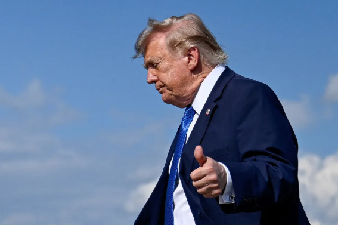

호르무즈해협 전면 개방·핵 위협 종식 포함한 ‘신속한 합의’ 조건 제시

입력 : 2026.08.03
도널드 트럼프 미국 대통령이 이란에 대한 대규모 군사 공격 계획을 취소했다고 밝혔다. 호르무즈해협 전면 개방과 이란 핵 위협 종식 등을 포함한 신속한 합의를 조건으로 제시했다.
도널드 트럼프 미국 대통령이 이란을 상대로 준비하던 대규모 군사 공격을 취소했다고 밝혔다. 미국과 이스라엘의 공습 가능성이 거론되며 중동 긴장이 빠르게 높아졌지만 공격 직전 외교적 협상에 다시 무게가 실리는 모습이다.
트럼프 대통령은 이란과 다른 중동 국가들로부터 합의의 기본 틀이 마련됐으니 공격을 보류해 달라는 요청을 받았다고 설명했다. 신속하게 합의가 이뤄지는 것을 전제로 군사 행동을 취소했다는 것이 미국 측의 설명이다.
트럼프 대통령이 언급한 합의의 핵심에는 호르무즈해협의 즉각적이고 완전한 개방과 이란의 핵 위협 종식이 포함됐다. 세계 원유 수송의 핵심 통로인 호르무즈해협 문제가 군사 충돌을 피하기 위한 협상의 중심 의제로 떠오른 셈이다.
다만 트럼프 대통령의 발표와 별개로 이란이 이러한 조건을 최종적으로 받아들였는지는 확인되지 않았다. 협상의 구체적인 방식과 핵 프로그램을 둘러싼 양측의 입장 차이도 향후 변수로 남아 있다.
공격 취소 발표 전까지 상황은 빠르게 악화되고 있었다. 미국 언론들은 미국과 이스라엘이 이란의 에너지 기반시설 등을 겨냥한 대규모 공격을 준비하고 있으며 이르면 주말에 작전이 시작될 가능성이 있다고 전했다.
트럼프 대통령 역시 앞서 이란을 강하게 공격할 수 있다는 취지의 발언을 내놓으며 군사적 압박 수위를 높였다. 공격이 실제로 이뤄질 경우 이란의 보복과 중동 전역의 확전으로 이어질 수 있다는 우려가 커졌다.
이란은 자국 기반시설이 공격받을 경우 이스라엘의 주요 시설과 역내 에너지 시설 등을 겨냥해 대응할 수 있다고 경고했다. 군사 충돌이 확대될 경우 원유와 가스 공급망까지 직접적인 영향을 받을 가능성이 제기됐다.
이 과정에서 사우디아라비아와 카타르, 아랍에미리트, 튀르키예, 파키스탄 등 역내 국가들이 긴장 완화를 요구한 것으로 전해졌다. 카타르와 오만 등을 통한 접촉에서는 호르무즈해협 재개방 문제를 둘러싼 중재가 진행된 것으로 알려졌다.
트럼프 대통령의 공습 취소 발표로 미국과 이란의 직접적인 군사 충돌 위험은 일단 낮아졌다. 그러나 이번 결정은 ‘신속한 합의’를 전제로 한 것이어서 외교 협상이 실패할 경우 군사적 압박이 다시 강화될 가능성을 배제하기 어렵다.
특히 이란이 호르무즈해협의 전면 개방과 핵 프로그램 관련 조건을 어느 수준까지 받아들일지가 핵심이다. 당장의 공습 보류가 장기적인 긴장 완화로 이어질지는 앞으로 진행될 협상 결과에 달려 있다.
✔ 트럼프, 이란에 대한 대규모 군사 공격 계획 취소
✔ 호르무즈해협 즉각·전면 개방을 합의 조건으로 언급
✔ 이란 핵 위협 종식도 핵심 조건에 포함
✔ 미국·이스라엘의 이란 에너지 시설 공격 가능성 앞서 제기
✔ 중동 국가들이 긴장 완화 촉구
✔ 이란의 실제 최종 합의 여부는 아직 불확실